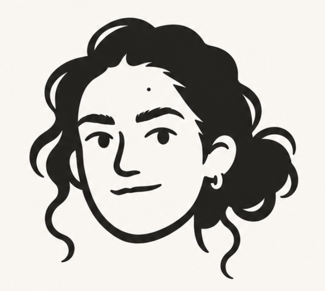
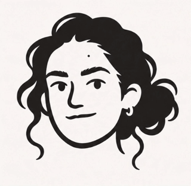
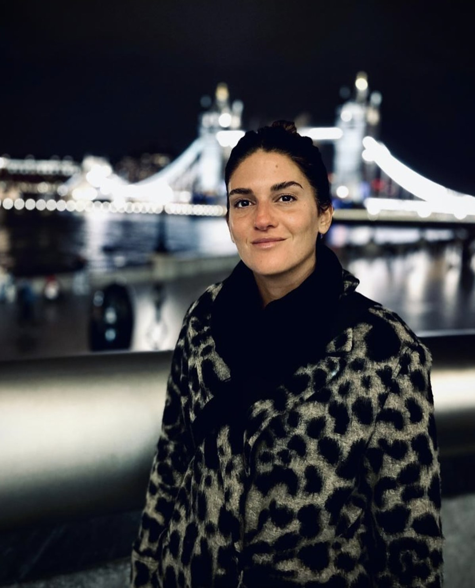
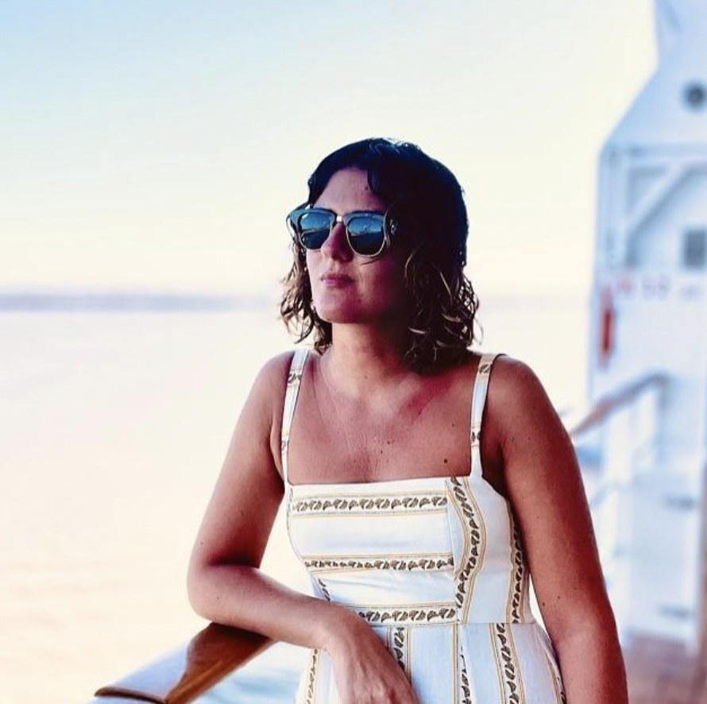
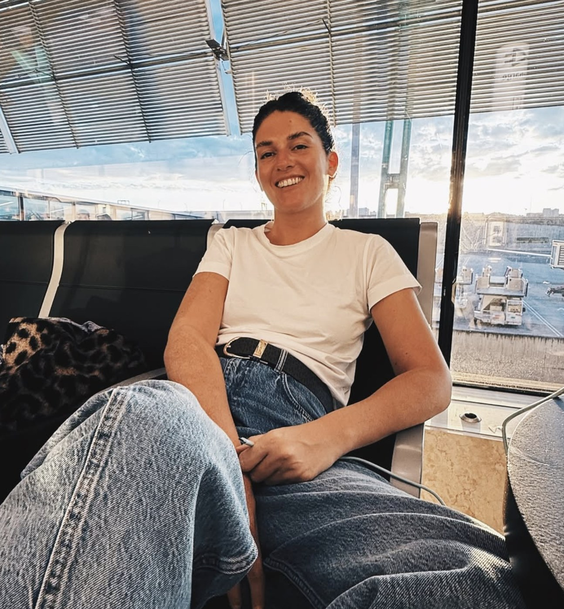

Argentina


Soy diseñadora especializada en Design Systems, estrategia visual y experiencias digitales. Transformo problemas complejos en soluciones claras y escalables, conectando diseño y tecnología. Actualmente trabajo en Despegar, en Design Ops, impulsando la evolución del Design System y su dirección visual.
01 — Work
Despegar — Repensando la experiencia visual
Construir una nueva dirección visual para crear una experiencia digital más coherente, intuitiva y escalable.
Despegar — Construyendo un design system agéntico
Un sistema de agentes de IA que genera pantallas respetando los componentes y tokens reales de EVA UI.
[Placeholder] Nombre del proyecto 1
[Placeholder] Descripcion corta del proyecto: que problema resolviste y como.



02 — About
Cómo llegué hasta acá
Soy diseñadora con 8 años de experiencia en UX/UI y 5 años de especialización en Design Ops, desarrollando y evolucionando Design Systems.
Me interesa conectar diseño y tecnología para transformar problemas complejos en soluciones claras, consistentes y escalables. Me apasiona la estrategia visual, la construcción de sistemas y la mejora continua de los procesos de diseño.
Lidero iniciativas estratégicas para la evolución del Design System (EVA UI), impulsando su escalabilidad, consistencia y adopción transversal en los distintos productos de la compañía.
- Impulso la redefinición de la dirección visual del producto (UI Revamp), estableciendo principios, criterios y lineamientos para elevar la calidad y coherencia de las experiencias digitales.
- Trabajo en la definición de estrategias de UI, auditorías visuales y evolución de componentes, conectando las necesidades de diseño con las posibilidades técnicas.
- Promuevo la estandarización de procesos, documentación y herramientas que favorecen la autonomía de los equipos y la calidad de implementación.
Participé en la evolución y mantenimiento de EVA UI, el Design System de Despegar, trabajando en la definición, documentación y mejora continua de componentes y patrones de interfaz.
- Impulsé iniciativas de estandarización de criterios visuales y buenas prácticas, brindando soporte y acompañamiento a los equipos de diseño para promover consistencia y adopción del sistema.
- Colaboré con UX Engineers en la articulación entre diseño y desarrollo, facilitando la implementación de componentes y la alineación entre Figma y código.
- Desarrollé documentación, guidelines y procesos de Design Ops para optimizar los flujos de trabajo y mejorar la colaboración entre equipos.
UX/UI Designer
Diseñé experiencias digitales para plataformas web y aplicaciones, participando en distintas etapas del proceso de diseño, desde la definición de flujos y arquitectura de información hasta el diseño de interfaces.
- Trabajé en la conceptualización y resolución de experiencias centradas en el usuario, transformando requerimientos de negocio en soluciones digitales intuitivas y funcionales.
- Desarrollé wireframes, prototipos interactivos y diseños de alta fidelidad en colaboración con equipos multidisciplinarios.
- Participé en la definición de patrones de interacción y criterios visuales, buscando consistencia, usabilidad y calidad en las experiencias.
- Colaboré estrechamente con desarrolladores y otros perfiles del equipo para acompañar la implementación de los diseños y asegurar su correcta ejecución.
Digital Designer
Diseñé piezas gráficas y contenidos visuales para redes sociales de diferentes marcas, adaptando las propuestas a sus identidades y objetivos de comunicación.
- Participé en el diseño de sitios web y landing pages, trabajando en la estructura, organización de contenidos y diseño de interfaces.
- Desarrollé propuestas visuales para campañas digitales, promociones y acciones de comunicación en distintos canales.
- Colaboré en la creación y adaptación de identidades visuales, desarrollando aplicaciones gráficas para diferentes medios y soportes digitales.
- Trabajé junto al equipo creativo en la conceptualización y ejecución de proyectos, desde la exploración visual hasta la entrega de piezas finales.
03 — Contact